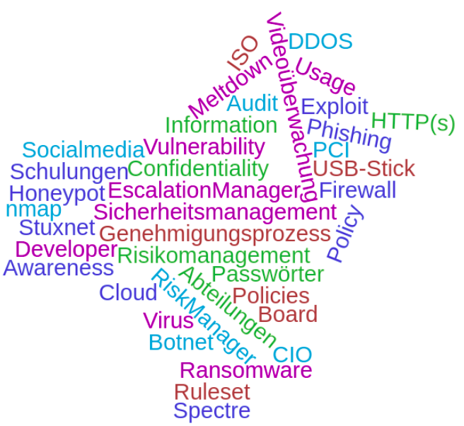

### E-Security 1 - Vorstellung #### Wintersemester 2019/2020 FH JOANNEUM
### Vorstellung - Wer bin ich? - DI (FH) Josef Tschiggerl - externer Lehrbeauftragter - Absolvent IMA05 an der FH Joanneum - ~10 Jahre bei Wirecard CEE als Team Lead SD Austria
### E-Security 1 @ AIM - 2 SWS -> 2 ECTS - Integrierte Lehrveranstaltung mit Vorlesungen und Übungen (Lab) - Benotung über Mitarbeit, Präsentationen und Ausarbeitungen - Abgabe an FH-Mail - Slides/Übersicht auf https://github.com/joseftsch/esec1
### E-Security 1 @ AIM - Einführung und Terminologie - Sicherheitsmanagement - Normen und Zertifizierungen (ISO 27k Serie, BSI, VdS 3473, PCI) - Bedrohungsklassifizierung und Risikoanalyse - Security Nightmare - "Tools of the trade" (Security Scanning) - Abschlussübung
### Vorstellungsrunde - Ihre Erwartungen an ESEC? - Ihr Zugang zu E-Security im Alltag?
